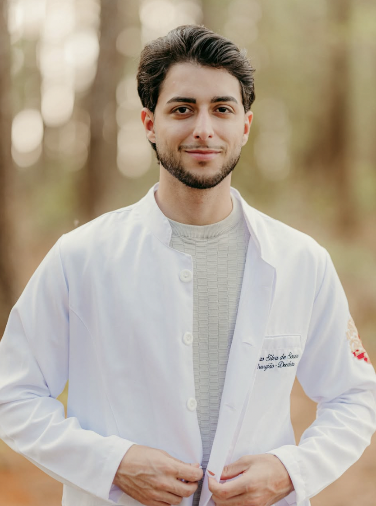

01
Odontologia
Avaliação e cuidados voltados à prevenção e à manutenção da saúde do seu sorriso.
Converse sobre o tratamentoOdontologia e estética com atenção aos detalhes, respeito à sua individualidade e cuidado em cada etapa.
Agende sua avaliação
Conheça registros de sorriso, perfil e lábios. Acompanhe mais conteúdos e trabalhos no Instagram profissional.



Lucas Silva atua na área odontológica em Uberlândia, com uma abordagem voltada à saúde bucal e à estética. Cada sorriso tem uma história, e cada atendimento merece atenção aos detalhes.
O primeiro passo é entender suas necessidades e conversar sobre as possibilidades de tratamento.
Vamos conversarConheça algumas áreas de atendimento que podem compor seu plano de cuidado, conforme avaliação profissional.
Avaliação e cuidados voltados à prevenção e à manutenção da saúde do seu sorriso.
Converse sobre o tratamento
Uma abordagem individualizada para conversar sobre equilíbrio e naturalidade facial.
Converse sobre o tratamento
Avaliação individualizada para conversar sobre a harmonia do perfil.
Converse sobre o tratamentoConte um pouco sobre o que você procura. Ao finalizar, você continua a conversa pelo WhatsApp.
Uberlândia • Minas Gerais